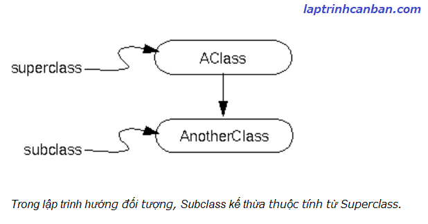
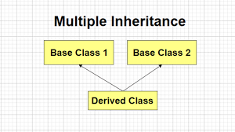

Cùm tìm hiểu về kế thừa trong C++. Bạn sẽ biết khái niệm kế thừa trong C++ là gì, cú pháp kế thừa trong C++, cách kế thừa constructor trong C++, cũng như khái niệm đa kế thừa trong C++ sau bài học này.
Kế thừa trong C++ là gì
Kế thừa trong C++ là một chức năng đặc biệt quan trọng của class trong C++, giúp chúng ta có thể tạo ra một class bằng cách kế thừa các thuộc tính và chức năng của một class khác đã tồn tại trước đó.
Khi một class con được tạo ra bởi việc kế thừa thuộc tính của class cha thì chúng ta sẽ gọi class con đó là subclass trong C++, và class cha chính là superclass trong C++.

Vậy tại sao lại cần kế thừa trong C++?
Để trả lời câu hỏi này, hãy cùng xem hai class là bản thiết kế của 2 chiếc xe sau đây:
class carA{
public void accele(){
....
}
public void brake(){
....
}
public void hybrid(){
....
}
}
class carB{
public void accele(){
....
}
public void brake(){
....
}
public void hybrid(){
....
}
}
Mỗi chiếc xe A và B ở trên đều có những đặc trưng khác nhau. Tuy nhiên vì cùng là xe, nên giữa chúng sẽ có các chức năng cơ bản giống nhau. Do vậy, nếu chúng ta thiết kế riêng từng chiếc xe một bao gồm cả phần chung này, thì sẽ rất mất thời gian. Chưa kể là nếu tăng số lượng xe lên, thì phần công việc trùng nhau này sẽ làm giảm đi hiệu quả công việc.
Do đó, liệu có cách nào để có thể dùng chung phần thiết kế giống nhau, còn các phần khác nhau của mỗi chiếc sẽ được thiết kế riêng cho chúng?
Và đó chính là tiền đề để tính kế thừa trong C++ được ra đời.
Trước hết, chúng ta sẽ tạo ra một class nguồn chứa các phần thiết kế chung. Class này được gọi là class cha (superclass), chứa các đặc tính có thể truyền lại cho các class con của nó.
class car{
public void accele(){
....
}
public void brake(){
....
}
}
Sau đó, với mỗi class con (subclass) dùng để thiết kế riêng cho xe A và xe B, chỉ cần kế thừa các thiết kế chúng từ class cha, và rồi thiết kế thêm các phần khác nữa là chúng ta có thể nhanh chóng hoàn thành được việc thiết kế xe rồi.
class carA extends car{
public void hybrid(){
....
}
}
class carB extends car{
public void openRoof(){
....
}
}
Cú pháp kế thừa trong C++
Để viết kế thừa trong C++, chúng ta sử dụng cú pháp sau đây:
class BaseClass
{
};
class DerivedClass : public BaseClass
{
};
Trong đó BaseClass và DerivedClass lần lượt là class cha và class con.
Lưu ý chúng ta cần phải khai báo class cha trước rồi mới khai báo class con sau, nếu làm ngược lại thì lỗi sẽ bị xảy ra.
Hãy cùng xem một ví dụ đơn giản về kế thừa trong C++ sau đây. Class BaseClass sẽ là class cha, và class DerivedClass là được kế thừa từ cha của nó.
|
Giống như ví dụ trên, mặc dù chúng ta không khai báo hàm print() bên trong class DerivedClass, nhưng do nó được kế thừa từ class BaseClass, nên nó có khả năng gọi hàm print() được kế thừa từ class cha của nó.
Truy cập biến và hàm thành viên của superclass trong C++
Về cơ bản thì class con (subclass) có thể kế thừa các biến và hàm thành viên từ class cha (superclass), ngoại trừ những biến và hàm thành viên có Access modifier là private.
Nói cách khác, từ class con, chúng ta chỉ có thể truy cập vào các biến và hàm thành viên có Access modifier là public hoặc protect trong class cha (superclass) mà thôi.
Ví dụ, nếu chúng ta cố gắng truy cập các biến và hàm thành viên trong class cha có Access modifier là private từ class con thì lỗi sẽ xảy ra như sau:
class BaseClass |
Kế thừa constructor trong c++
Thứ tự thực thi constructor và Destructor khi kế thừa class
Khi chúng ta tạo ra một instance từ một class con được kế thừa từ class cha, tất nhiên thì constructor (hàm khởi tạo) của class con sẽ được gọi, nhưng thực tế thì trước khi constructor của class con được gọi thì constructor của class cha đã được thực thi rồi.
Thế nên, thứ tự xử lý khi chúng ta tạo một instance từ một class con sẽ là như sau:
Gọi constructor của class cha => Gọi constructor của class con => tạo instance của class con
Ở chiều ngược lại thì khi phá huỷ một instacne của class con, các Destructor (hàm huỷ) sẽ được gọi theo thứ tự như sau :
Gọi Destructor của class con => Gọi Destructor của class cha => Xoá instance của class con
Thật vậy, hãy cùng xem ví dụ sau đây:
|
Kết quả, lần lượt các constructor và destuctor được gọi theo thứ tự mà Kiyoshi đã trình bày như sau:
BassClass Constructor |
Từ ví dụ trên, chúng ta có thể hiểu khi kế thừa một class trong C++, không những các biến và hàm thành viên mà cả Destructor và Constructor cũng có khả năng được kế thừa. Và đó là tiền đề để chúng ta sử dụng Kế thừa constructor trong c++.
Cú pháp kế thừa constructor trong c++
Để kế thừa constructor trong C++, chúng ta sử dụng cú pháp sau đây:
class BaseClass
{
BaseClass()
};
class DerivedClass : public BaseClass
{
DerivedClass():BaseClass()
};
Trong đó BaseClass và DerivedClass lần lượt là class cha và class con. Và DerivedClass() và BaseClass() lần lượt là các constructor (hàm khởi tạo) của class con và class cha.
Lưu ý giữa 2 constructor, chúng ta sử dụng toán tử : biểu thị mối liên hệ kế thừa giữa chúng.
Ví dụ về kế thừa constructor trong c++
Chúng ta có thể kế thừa constructor trong c++, khi tạo ra một instance của class con, khi nó được kế thừa constructor từ class cha như ví dụ sau:
|
Kết quả, do được kế thừa hàm constructor từ class cha, nên nó có thể gọi constructor này khi tạo instance của class con như sau:
1 |
Đa kế thừa trong C++
Đa kế thừa trong C++ là gì
Ở các ví dụ trên, chúng ta đã hình dung ra được cách mà một class con kế thừa các biến và hàm thành viên từ class cha của nó. Hình thức kế thừa một con một cha như vậy được gọi là đơn kế thừa trong C++.
Nhưng có một điều rất đặc biệt trong C++, đó chính là khả năng một class không những có thể nhận kế thừa từ một class, mà nó còn có khả năng nhận kế thừa từ nhiều class khác nhau. Và đó chính là tính đa kế thừa trong C++.
Đa kế thừa trong C++ có tên tiếng anh là Multiple Inheritance, là một chức năng đặc biệt quan trọng của class trong C++, trong đó một class có thể nhận kế thừa từ nhiều class khác nhau.

Nhờ có tính đa kế thừa trong C++ mà chúng ta có thể tái sử dụng rất nhiều các class có sẵn để có thể tạo ra một class mới, thông qua việc kế thừa từ chúng, qua đó có thể rút ngắn thời gian viết code và nâng cao hiệu năng phát triển phần mềm.
Cú pháp đa kế thừa trong C++
Khi tạo một class con kế thừa từ nhiều class cha, chúng ta sử dụng cú pháp đa kế thừa trong C++ sau đây:
class BaseClass1
{
};
class BaseClass2
{
};
class BaseClass3
{
};
class DerivedClass : public BaseClass1, public BaseClass2, public BaseClass3
{
};
Trong đó DerivedClass là class con được nhận đa kế thừa từ các class cha BaseClass. Lưu ý chúng ta viết các class cha cách nhau bởi dấu phẩy như trên.
Ví dụ cụ thể về đa kế thừa trong C++
Hãy cùng xem ví dụ đơn giản về đa kế thừa, đó là kế thừa 2 lớp trong c++ với một class con được kế thừa từ 2 lớp cha như sau:
|
Có thể thấy rõ, class con DerivedClass do được đa kế thừa từ 2 class là BaseClass1 và BaseClass2, nên khi instance của nó được tạo ra thì các hàm khởi tạo Constructor của 2 hàm cha cũng sẽ được gọi.
Và nó có thể gọi hàm thành viên của chính nó, hoặc là các hàm thành viên được kế thừa từ class cha mẹ của nó như trên.
Tổng kết
Trên đây Kiyoshi đã hướng dẫn bạn về kế thừa trong C++ rồi. Để nắm rõ nội dung bài học hơn, bạn hãy thực hành viết lại các ví dụ của ngày hôm nay nhé.
Và hãy cùng tìm hiểu những kiến thức sâu hơn về C++ trong các bài học tiếp theo.
HOME>> lập trình c++ cơ bản dành cho người mới học lập trình>>28. hướng đối tượng trong c++